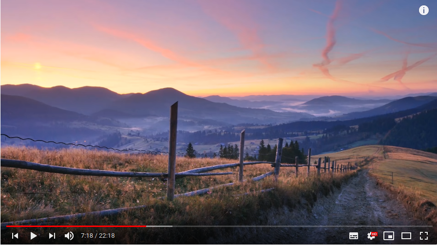
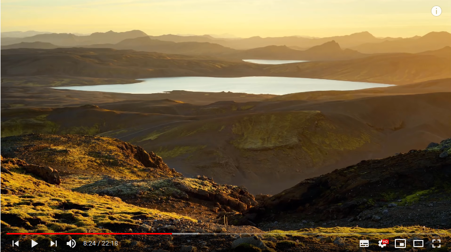

Характеристики фотоаппарата
Взаимозависимы и взаимокомпенсируемые. Шкала экспозиции (экспонометр) - баланс этих характеристик. Экспозиция должна быть посередине.
1. Выдержка
-
Очень короткие, спорт (1/500 - 1/2000):
Бег(1/500), велосипеды(1/500), авто, самолеты (1/1000 - 1/2000), быстрое движение
Нужны светосильные объективы
-
Короткая, Портретная (1/50 - 1/250):
Портрет со штатива (1 - 1/50), убрать "шевеленку" при съемке "с рук" (1/200 - 1/250)
-
Длинная, легкое размытие (1/1 - 1/50):
Творческое размытие, где нужно подчеркнуть движение (фейерверки, фонтаны, водопады)
-
Очень длинная (неск. секунд - 2-3 часа и более)
Движение звезд, ночные съемки города, ночное небо, рисование светом.
2. Светочувствительность (ISO)
Параметр сенсора. Чем меньше, тем лучше. При большом значении будет больше "шумов, артефактов, пиксилизации"
Можно ставить в Авто-режим и не париться по ISO вообще, если значения более-менее адекватные
3. Баланс белого
Измеряется в градусах K.- Лампы накаливания
- Люминисцентные лампы
- Солнечный свет
- AWB - авто
Характеристики объектива
-
Фокусное расстояние
Главный параметр объектива. Расстояние от плоскости передней линзы до сенсора.
Бывают объективы с переменным фокусным расстоянием ("зумы") и с постоянным ("фиксы"). Чем больше этот параметр - тем больший зум можно получить, но тем меньше угол обзора.-
до 35 мм (от 63°) - широкоугольный ("ширик")
Большой угол обзора, меньшая зависимость от "шевеленки".
Пейзаж, архитектура, интерьер
Не подходит для портретной съемки - искажает геометрию, наибольшая глубина резкости
-
от 35 до 85 мм (43° - 65°) - портретный ("портретник"), нормальный, среднефокусный
Портретная и предметная съемка с близкого расстояния
Меньше искажают геометрию. Близко к естественному зрению человека.
-
от 85 мм (от 28°) - теле ("телевик"), спорт, длиннофокусный
Удаленные объекты крупным планом
Крупные габариты, обеспечивают наименьшую глубину резкости, сильное размытие фона
-
от 85 мм - макро (длиннофокусный)
С короткой дистанцией фокусировки. Макросъемка
-
до 35 мм (от 63°) - широкоугольный ("ширик")
-
Светосила (диафрагма)
Влияет на резкость изображения (глубина резкости). Можно размыть задний план, эффект БОКЕ (открытая диафрагма), либо включить задний план (закрытая диафрагма - нужен светосильный объектив).
Лучше избегать крайних значений диафрагмы на недорогих объективах (будет негативно влиять на качество фото "эффект дымки, замыленности фона" - но можно использовать для композиции)
Лучше придерживаться средних значений (4, 5.6, 8.0)
На фиксах, как правило, лучшая светосила и общее качество фото.
- Cветосильный - f/2,8 - 4,5
- Сверхсветосильный - от f/2,0
-
Стабилизатор (IS)
Image stabilization - стабилизация изображения для лучшего качества
-
Автофокус (AF)
Cо встроенным приводом автофокусировки на объекте. Бывают разные приводы автофокуса, лучший шаговый (меньший шум).
Пейзажная съемка
Рекомендации
Хороший свет и красивое место - это хорошие условия, но не догма для хорошего кадра.
Нужно начать мыслить как фотограф, мыслить графическими элементами (линии, формы, ритмы)
Не нужно ловить кадры, нужно их создавать.
Не нужно снимать только красивый вид, должен быть акцент (главный персонаж)
Провести разветку местности заранее, нужно искать красивые места и виды
Настройки
- Со штатива (возможны длинные выдержки)
- ISO 100-200
- Диафрагму закрыть (13-14) для большой глубины резкости (чтобы резкий был передний и задний план)
- Режим Av (приоритет диафрагмы) для настройки глубины резкости (а выдержка чтобы подбиралась автоматически)
- RAW формат
- Снимать лучше на рассвете или закате или использовать "синий час" (сумеречный час, магия и мистика) (30 мин до восхода и 30 мин после заката), в дневное время хорошие фото редко получаются
- Можно использовать брейкетинг - слияние неск кадров в один (снять сначала резко передний план потом задний и объединить)
Композиция - Техника 7 фотографических элементов (Евгений Тимашёв)
Природа имеет хаотичный характер, и задача фотографа найти в ней своего рода гармонию. В идеале должна быть гармония из всех этих элементов, но чаще бывает что что-либо доминирует.
-
Линии
Линии забора, дороги, облаков, гор. Линии в кадре в идеале должны двигаться от переднего плана к среднему и дальнему - помогают зрителю переводить взгляд.
-
Форма

Форма пня, скал
-
Ритм

Ритм берез и растений в кадре, повторение элементов в кадре с одинаковым или близким к нему интервалом.
-
Свет
Подстветка переднего плана, светлое небо
-
Контраст

Береза на фоне сосен + свет
-
Пространство

Что-то маленькое на фоне чего-то большого. Значимые элементы на фоне пустоты или минального набора элементов. Фон как монотонное единое пространство.
-
Момент

Редкие моменты, которые редко встречаешь в обычной жизни. Облака, сияние, радуга. Какой-то либо элемент удачи в фотографии.
Типичные акценты при пейзажной съемке
- Солнце на закате или восходе
- Деревья необычной формы
- Камни
- Вода в виде луж, рек, озер и т.д.
- Берег, линия горизонта
- Цветы, трава
- Люди, птицы, дикие животные
Композиция (фотобукварь Агафонов, Пожарская)
Композиция - составление, умение объекдинить в единое целое различные элементы изображения
Можно делать акценты по какому-либо из параметров, например, световой (контраст) или цветовой акцент (главный объект выделен цветом на невзрачном фоне, также бывает резкостный, масштабный, тональный акценты, акцент по кадрированию.
- Форма
- Цвет
- Объем
- Фактура (Материал, поверхность)
- Свет и тень
- Перспектива (линейная, тональная - яркость фона больше)
- Ракурс
- Формат
- План - общий (дальний), средний, крупный
Портретная съёмка
Хорошие фото получаются от хорошего материала. Портрет должен вызывать эмоции, переживания, идеи,
Этапы при портретной съемке:
- ПОДГОТОВКА (подумать заранее)
- Время съемки
- Место съемки
- Реквизит (взаимодействие модели с окр. миром). Передать контекст человека, связанный с его деятельностью
- Одежда и макияж (одежда должна быть красивой, яркой, не повседневная, пуховики, пакеты, унылая одежда ухудшают кадр, нужен визажист по обстаятельствам)
- Какая эмоция будет доминировать в кадре, какой образ
- Нужно заранее обсудить процесс съемки, подумать об идеях, чтобы пробить стену между моделью и фотографом
- ФОН, ЛОКАЦИИ
- Фон должен быть в меру интересный (не нужно фотографировать на фоне хрущевок, автодорог и т.д.)
- Фон дополняет кадр, его эмоцию и задумку
- Акцент всегда должен быть на модели, фон не должен сильно забирать на себя внимание, он лишь дополняет
- Светлое на темном, темное на светлом
- Можно отделить модель от фона засчет одежды (цвет, контраст, форма)
- Нужно снимать в разных локациях
- СВЕТ
- Должен быть мягким, падать сверху в идеале
- Снимать нужно в идеале по направлению света
- Софтбокс или гибкий отражатель
- Нужно отделять модель от фона светом (нужно подсвеивать модель и цвет модели и фона не должен сливаться)
-
ВИДЫ СВЕТА (естественный, искусственный, мягкий, жесткий, теплый, холодный):
- Рисующий (главный свет)
- Заполняющий (заполняет тени на лице)
- Контровой (подсветка сзади, выделяет контур)
- Фоновый (подсветка фона)
По направлению классифицируется на фронтальный, диагональный, боковой, контровой
- ОБЪЕКТ СЪЕМКИ
- Главный объект - фокусный элемент. Наведена резкость
- Нужно этот объект, как-то выделить, чтобы внимание было на него (за счет контраста, цвета, фокуса, перспективы и т.д)
- Главный объект лучше размещать справа, так как люди читают фото слева-направо
- Не должны торчать деревья здания и т.д. с головы, плеч
- Движущиеся объекты интересней статичных (нужно пространство перед движ. объектом)
- Если есть перспектива, то главный объект должен располагатся в центре перспективы, чтобы направляющие линии вели к объекты
- Фокус на ближайщем глазе
- Лучше использовать фокусировку по центральной точке в настройках фотоаппарата
- Нельзя кадрировать по стыковым линиям (логти, колени, пояс, стыки одежды и т.д.)
- Кончик носа не должен располагаться на контуре лица
- Яркие элементы притягивают внимание
- Можно создавать так называемую рамку, за счет линий в композиции, чтобы выделить объект
- Повыше подбородок, чтобы больше света попадало. Направлять лицо ближе к свету, чтобы не было много теней на лице
- КОМПОЗИЦИЯ
- Должна быть заполненность в кадре (передний план, средний, дальний)
- Правило третей (наиболее значимые элементы должны располагаться на пересечении третей)
- Не должно быть лишних отвлекающих моментов
- Нужно использовать пространство в кадре (кислород в кадре)
- Нужно использовать баланс в кадре (противовес)
- Нужно использовать ритм в кадре (повторяющиеся детали)
- Линии, диагонали и формы (можно составлять эскизы композиции на бумаге заранее)
- Золотое сечение (Начало спирали - глаз или голова)
Общие правила при портретной съемке:
- Нужно делать серию фото (серийность, хронология), разные позы, композиции, локации
- Нужен фикс портретный объектив (35-65мм для кропов). 35мм лучше для средних планов, 65мм лучше для крупных
- Лучше FF
- Диафрагма максимально открыта (2.0 - 2.8, эффект Боке улучшает портрет и создает акцент)
- Сохранять фото, которые нравятся (прокачивать "насмотренномть")
- Важна не техника, а умение работать с исходным материалом
- План:
- Общий (Лицо, детали лица)
- Средний (поясной)
- Крупный (ростовой)
- Точка съемки:
- Верхняя (сверху, будут короче ноги)
- Средняя (ровно в туловище)
- Нижняя (снизу, будет длиннее ноги)
Примеры:
-
Нет баланса
-
Есть баланс
-
Перспектива
-
Ритм
-
Правило третей
Обработка фото
Фоторедактор. Фотография дожна передавать ощущения, которые были при ее съёмки. В этом и поможет фоторедактор.
Photoshop Lightroom и Luminar - Наше всё!.
1. Экспозиция
Типичная проблема при на фотографием с солнцем - сильно яркое небо, темная земля. Нужно прорисовать детали.
Можно использовать Регулируемый градиент для обработки экспозиции.
Тени (shadows) сделать светлее, убрать засветки (highlights). Смотреть на гистограмму и экспонометр.
2. Цветокоррекция в PS
Коррекция насыщенность цветов.
Если какой-либо цвет сильно выбивается или наоборот его не хватает, то нужно это отрегулировать.
цветовой насыщенностью - Vibrance +/-.
Одна из главных задач по цветокоррекции - ВЫДЕЛИТЬ ГЛАВНЫЕ и УБРАТЬ ЛИШНИЕ цвета.
Также можно использовать цветокоррекцию для замены цвета вообще - для изменения атмосферы кадра.
Автоподгон цветов на различных фотографиях
PS -> Изображение -> Коррекция -> Подобрать цвет (Выбираем источник и настраиваем)
Можно назначить гор. клавишу (Редактирование -> Клавиатурные сокращения) Ctrl+Shift+Q
Ручная настройка
PS -> Изображения -> Коррекция. В этом случае БУДУТ изменены пиксели исходной фотографии.
Корректирующие слои (лучше с помощью них!)
В PS лучше делать все настройки там, чтобы было всё наглядно + можно использовать непрозрачность слоя и эти слои можно перетаскивать на другие изображения. В этом случае НЕ БУДУТ изменены пиксели исходной фотографии.
- Яркость\Контрастность (Можно нажать на АВТО)
- Цветовой тон\Насыщенность
(Вибираем нужный цвет, который нужно усилить, ослабить или перекрасить c помощью инструмента руки -> настраиваем) - Выборочная коррекция цвета (ручная коррекция)
- Слой-заливка - ЦВЕТ
3. Техническая ретушь в PS
Удаление лишних объектов с фона, чтобы акцент был только на основном объекте в кадре (Убираем лишнее, выделяем главное).
-
Заплатка (J)
- Делаем копию слоя (Ctrl + J)
- Выделяем нужную область -> Передвигаем в ту часть, которая больше подходит для замещения
- После заплатки могут остаться видимые края, их можно почистить той же заплаткой
-
Штамп (J)
- Нажимаем ПКМ -> Выбираем кисть и жёсткость (жёсткость лучше небольшую)
- Выбираем область для клонирования (зажатый Alt)
- Штампуем
-
Точечная восстанавливающая кисть (J)
- Хорошо подходит для удаления мелких деталей (прыщей, родинок, логотипов на одежде и т.д.)
- Просто выделяем то, что нужно удалить
-
Пластика (Фильтр -> Пластика)
- Можно изменять геометрию черт лица
- Также можно исправлять геометрию различных фигур
- Расширенные настройки -> Инструмент Палец (Нажим и плотность делаем 20)
4. Прочее
КАДРИРОВАНИЕ
ВИНЬЕТИРОВАНИЕ - выделяет важные детали.
УДАЛЕНИЕ ПЫЛИ
Освещение
Редакторы фотографий
Adobe Lightroom
-
Create Library (after install)
Catalog -> All photographs -> ПКМ -> Import photos and videos -> Source -> Import
Then this catalog will appear in Folder directory
-
Photo folder
Library -> Expand directory
-
Обновление библиотеки (актуально при добавлении новых)
Folder -> Choose folder -> ПКМ -> Synchronize folder -> Synchronize
-
Add rating (0-5 keys)
Library -> Collection -> Five stars
-
Export
Select images -> ПКМ -> Export -> Export
-
Develop
Edit image
Luminar 4
- ДОБАВИТЬ ДИРЕКТОРИЮ С ФОТО: После установки нажимаем на + -> Добавить папку с изображениями
- ПРОСМОР RAW: Просмотр -> Пары RAW и JPEG -> Только RAW
- AI: AI-коррекция, AI-структура